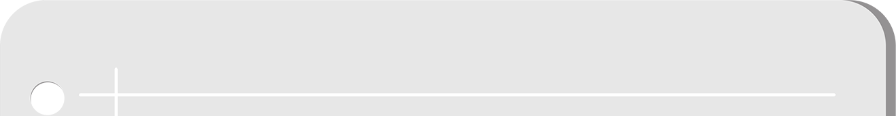

-
活動對象：6歲以上(國小學童) 之全國民眾(活動全程多以步行為主，還請評估體力是否能負荷)
-
活動範圍：桃園國際機場(含管制區內)
-
活動期間：2020/7/23~8/31每日9:00~18:00
(每梯報名截止日期：每梯活動日的前10天，為報名截止日期。
例7/23為第一梯次活動，7/13 24:00則為報名截止日期) -
報到時間：請務必準時09:00抵達報到地點
-
報到地點：★報名「第一航廈團」：請準時抵達「第一航廈-B2出境層-新東陽美食街服務台」
★報名「第二航廈團」：請準時抵達「第二航廈-B2出境層-義美美食街服務台」 -
報到流程：含身分證件繳交查驗、領機場參觀證、說明書、行程表，遲到逾時未完成報到者，恕不保留名額亦不予退費。
-
報名方式：桃園機場官網活動網頁
-
報名費用：限時優惠價-成人每位N.T. 1000元
兒童(6歲以上~12歲以下)每位N.T. 800元
包含：機場導覽(含主題候機室、機坪跑道、觀景台等)、中餐(宇逸貴賓室或畢卓樂地餐廳)、伴手禮、餐盒等。還可參加心跳蹦蹦福袋抽獎，將有機會獲得各家航空公司國際線機票、精品包、桃捷卡等豐富獎品。 -
付款方式：採線上刷卡 (串綠界，待昇恆昌給收款連結)
本活動由桃園國際機場委託昇恆昌股份有限公司協助代收代付、開立發票給報名者
後續拆帳給各家業者(扣除綠界手續費用) -
住宿需求：若於活動前一晚有住宿需求者(含中南部民眾)，完成報名後可享有「早鳥優惠價」入住第二航廈文青行旅(缺飯店簡介網址)。
完成報名後將同步提供”早鳥訂房代碼”，請自行前往飯店官網選訂房型。 -
退費說明：★ 報名前請再次檢查各項個資資料是否均正確無誤，因為要提前申請機場參觀證報名後資料與名單無法修改，報名資格亦不得更換或轉讓。
★ 若各團報名人數不足，未達成團標準，將於活動前5日email通知，全額退費。
★ 於活動前10日提出退費申請者，全額退費(酌收3%金流手續費)。
★ 於活動日前7日前提出退費申請者，退還50%費用(酌收3%金流手續費)。
★ 於活動前3日內，不予辦理退費。
★ 活動當天因私人因素未到或遲到，不予辦理退費。
★ 活動當天因體溫超過37.5度無法進入桃園國際機場，是否可以全額退費？
★ 若完成報名但因身份查核有問題(有前科或被通緝) ，通知報名者並全額退費？
★ 如遇颱風、豪雨、地震等天災，均依照桃園市政府公告或行政院人事行政局公告是否上班上課，不另行通知，退費需扣除15%行政手續費。 -
報名諮詢專線：0800-055-556（待補Mail確認，先放電話）